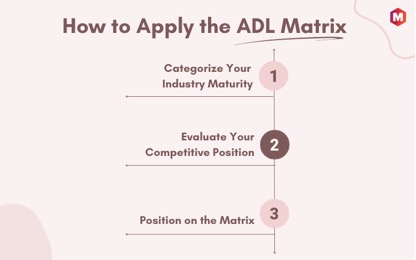
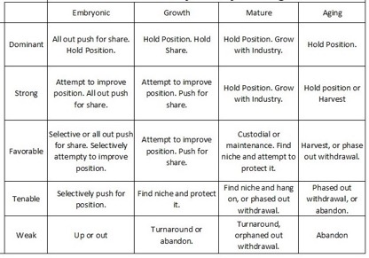

January
10, 2024 | By Victor Nadebu|
Table of Contents
The ADL Matrix, short for Arthur D.
Little Strategic Condition Matrix, is a management tool used to analyze the
competitive position of a business in relation to its key rivals. This matrix
helps companies evaluate their product portfolio and strategic options based on
2 dimensions: the industry’s life-cycle stage and competitive position.
The ADL Matrix classifies the
`Industry Life-Cycle Stage` into four categories:
1.
Embryonic
2.
Growth
3.
Mature
4.
Decline
The `Competitive Position` is
divided into five categories:
1.
Dominant
2.
Strong
3.
Favorable
4.
Tenable
5.
Weak
·
The ADL Matrix helps businesses map their market position
relative to competitors.
·
Companies can use the ADL Matrix to assess their products and
strategies based on the industry life-cycle stage and competitive position.
·
This matrix helps identify strategic opportunities and
threats, aiding proactive decision-making and planning.
Using these two dimensions,
companies can plot their products or services on the matrix to gain insights
into their market position and make strategic decisions accordingly. Some of
the key reasons for using the ADL matrix are:
·
To identify the competitive strengths of a product or service
·
To assess the potential for growth and profitability in
various industries
·
To make informed decisions about product portfolio
management, market expansion, or divesting underperforming business units
·
To provide a framework for strategic planning and prioritize
investments in different industries
Remember, the ADL Matrix is a
strategic tool used to guide decision-making. It’s not an exact science, but it
provides a helpful framework for understanding a company’s position within its
industry.
The Embryonic stage in the ADL
Matrix represents industries that are just beginning, characterized by low
market share and rapid market growth. Uncertainties are high and there exists a
potential for competitive advantages to be established.
·
The market is small but has significant growth potential.
·
Competition is scarce, allowing early entrants to establish a
strong market position.
·
Companies might face high risk due to uncertainties in
consumer acceptance and regulations.
·
Innovation and technology advancements shape the industry’s
future trajectory.
The Growth stage is marked by rapid
market growth, increasing competition, and a growing consumer base. Companies
in this stage have established a strong foothold and are focused on expanding
their market share.
·
The industry experiences significant growth in demand for
products or services.
·
Competition increases as more players enter the market to
capitalize on its potential.
·
Companies leverage their competitive advantage to increase
market share.
·
The focus is on expanding geographically and diversifying
product offerings to meet consumer needs.
In the Mature stage, industry growth
stabilizes, competition intensifies, and market shares become more established.
Companies in this stage must work hard to maintain their position and defend
against new entrants.
·
Market growth slows down as the industry reaches saturation.
·
Existing companies battle for market share, making it
difficult for new players to enter.
·
Companies focus on improving efficiency and cost-cutting
measures to maintain profitability.
The Aging stage is characterized by
declining market growth, intense competition, and a decrease in market share.
Companies in this stage must find new ways to revitalize their business and
adapt to changing consumer preferences.
·
Market growth declines as the industry becomes oversaturated
and/or faces disruptive technologies.
·
Competition remains fierce as companies fight for a shrinking
market share.
·
Companies must adapt and innovate to stay relevant and avoid
becoming obsolete.
In the Dominant position, a company
holds a significant market share and has a strong competitive advantage over
its competitors.
·
The company can set industry standards and influence market
trends.
·
Its products or services are highly sought after and
consumers have a strong brand loyalty.
·
The company can command premium prices and maintain
high-profit margins.
A company in the Strong position has
a considerable market share and competitive advantage but faces increasing
competition from other companies.
·
The company must innovate and adapt to stay competitive.
·
It may expand into new markets or diversify its products.
·
Despite increased competition, the company remains profitable
with loyal customers.
A company in the Favorable position
has a small but significant market share and may have a competitive advantage
in a niche market.
·
The company has room to grow and increase its market share.
·
It may face some competition, but it is not as intense as in
other positions.
·
The company must continue to innovate and cater to its
specific customer base to maintain its favorable position.
In the Tenable position, a company
faces moderate competition and has a decent market share, but lacks a strong
competitive advantage.
·
The company might struggle to stand out from competitors and
face pricing pressure.
·
It must prioritize improving efficiency and finding ways to
gain a competitive edge.
·
If successful, the company can potentially strengthen its
position in the future.
A company in a Weak position has a
small market share and lacks a competitive advantage.
·
Survival in a competitive market is challenging, especially
during rapid growth.
·
The company must prioritize product/service improvement and
differentiation from competitors.
·
Failure to do so could result in acquisition or closure.

·
First, identify the maturity stage of the industry where your
strategic business unit operates.
·
This classification should fall into one of the four
categories: embryonic, growth, mature, or decline.
·
These stages illustrate the life-cycle of an industry and the
level of its market development.
·
For instance, a newly emerging product line may fall into the
embryonic stage, while a business line with a strong market presence might be
in the mature stage.
·
Determine where your business stands competitively within the
industry
·
Evaluate the position of your business line in the market
·
Consider factors such as market share, brand recognition, and
competitive strengths
·
Classify your business as dominant, strong, favorable,
tenable, or weak
·
Businesses with high market share and dominant positions are
often classified as strong or dominant
·
Determine your industry maturity category and competitive
position
·
Plot your strategic business unit on the ADL Matrix
·
Gain insights into potential strategic directions
·
Identify resource allocation for different business lines
·
Remember, the matrix is a framework for strategic planning,
not a definitive decision-making tool

The image represents the ADL Matrix
grid, a strategic tool that categorizes businesses based on their competitive
position and the industry life cycle stage. The matrix is divided into 20
cells, each representing a unique strategic scenario.
·
The Y-Axis represents the competitive position of your
business, ranging from “Dominant” to “Weak.”
·
The X-Axis displays the life cycle stage of your industry,
from “Embryonic” to “Decline.”
·
Each intersection point on the grid provides a strategic
direction for the business based on its unique position.
·
By understanding your position on the ADL Matrix, you can
determine the best strategic course to strengthen your market position.
Let’s break down how to use the ADL
Matrix with a simple example.
Imagine we have a company, “ABC
Tech”, that specializes in manufacturing smart home devices.
·
The first step would be to identify the life-cycle stage of
the industry. Since the smart home industry is rapidly growing and innovating,
this could be considered a ‘Growth’ stage industry.
·
Next, we determine ABC Tech’s competitive position. Suppose
ABC Tech has a wide range of popular products and a significant market share.
Hence, we can say it has a ‘Strong’ competitive position.
·
By locating the intersection of ‘Growth’ and ‘Strong’ on the
ADL Matrix, we can identify strategic options for ABC Tech. These could include
further investment in product development, diversification of product lines, or
aggressive marketing strategies.
Utilizing the ADL Matrix allows a
company to align its strategies with its competitive standing and industry
lifecycle. It is an essential tool for making informed business decisions and
driving sustained growth.
1) Who invented the ADL Matrix?
The ADL Matrix was invented by the
consulting firm Arthur D. Little in the 1970s.
2) What are the pros and cons of the
ADL Matrix?
Pros:
·
Offers a thorough industry analysis.
·
Identifies a company’s strategic position relative to
competitors.
·
Aids proactive planning by aligning business strategies with
industry life cycles.
·
Easy to understand and interpret for strategic
decision-making.
Cons:
·
Oversimplifying complex competitive environments can lead to
misinterpretations.
·
The model assumes companies in similar life-cycle stages,
which is rarely true.
·
Accurate positioning relies on reliable and current industry
data, which may not always be available.
·
Disruption from technological or market innovation is not
considered.
3) What are the dimensions of the
ADL matrix?
The dimensions of the ADL Matrix are
Industry Life-Cycle Stages and Competitive Position.